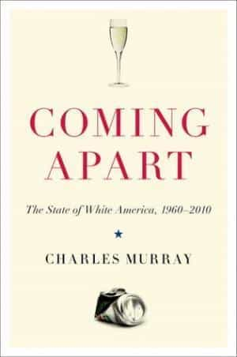
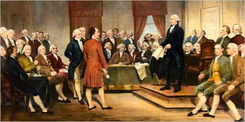
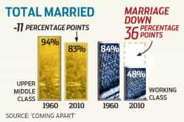
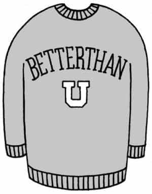
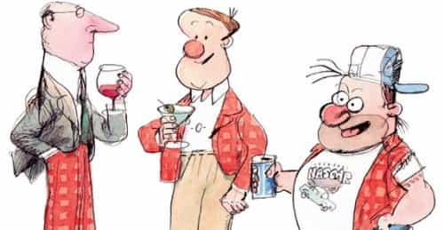

Rod Berne is a student, writer, and thought criminal. His columns run every Saturday. Follow him on Twitter.


Famous political thinker Charles Murray is the author of Coming Apart: The State of White America, 1960-2010. Murray presents the case that in the U.S., there are two distinct cultures within white America which have formed over the last 50 years: The New Upper Class and the New Lower Class.

Murray focuses primarily on white America because he wanted to avoid the complexity that race would introduce into discussions of class. Fifty years ago, white Americans were a homogeneous bunch, with mostly the same social and cultural norms. They watched the same television shows, ate the same food, and had the same rate of marriage and happiness across social classes. This is not true today. What happened?

Murray argues that the feasibility of the American project has historically been based on four founding virtues. He identified these virtues based on the writings of John Adams, Thomas Jefferson, and other key figures of the 18th century:
1. Industriousness. This was a signature characteristic of Americans. It consists of the deep-seated American assumption that life is meant to be spent getting ahead by working hard to make a better life for oneself and one’s children. American industriousness fascinated citizens of other nations.
2. Honesty. For Thomas Jefferson, “honesty is the first chapter in the book of wisdom.” Many Americans are familiar with the stories of “Honest Abe Lincoln” and George Washington. This unique trait most observed by European intellectuals when they noted the willingness of Americans to obey the law. Tocqueville, during his journey throughout the U.S. in the late 19th century, noted, “In America, the criminal is looked upon as an enemy of the human race.”
3. Marriage. The founders took for granted that marriage was the bedrock institution of American society. In fact, the founders often used the word “morality” as a synonym for fidelity, meaning to remain faithful to one’s spouse. The American concept of marriage was different from the European one, with its lack of arranged marriages and more religious roots.
4. Religiosity. Interestingly, Murray notes the relatively progressive views the founders held on religion. Jefferson was a Deist, Franklin did not believe in the divinity of Christ, Hamilton and Madison were suspected of being relaxed about their devotion to Anglicanism, and Washington was evasive about his views on Christianity. However, all of the founders were united in their view that religion was essential to the health of American society. The social institution of religion placed an emphasis on self-restraint and self-discipline, which the founders considered essential for civic bonds.
The founders were explicit in their belief that the American constitution would only work for moral and virtuous people who followed the above four precepts. As anyone can clearly see through mere observation, these values have eroded in American society.
Now let’s take a look at the data. Charles Murray defines the new social classes along educational and occupational lines. He has created a quiz here that measures how disconnected you are from mainstream American society.
To qualify for the upper class, individuals must have at least a bachelor’s degree and work as a manager, physician, attorney, engineer, architect, scientist, college professor or content producer in the media. For the most part, these are your stereotypical white collar careers. To be assigned to the lower class, individuals must have no academic credentials higher than a high-school diploma. If they work, it must be in a blue-collar job, a low-skill service job such as cashier, or a low-skill white-collar job such as mail clerk or receptionist.
For the lower classes, marriage has undergone a particularly dramatic transformation. Working class Americans 50 years ago would not even recognize their counterparts in modern America.

In 1960, high proportions of whites in both upper and lower social classes were married. For the upper class, it was 94%, and for the lower class it was 83%. In the 1970s came the great divergence. Among the upper classes, marriage has stabilized at 83% since the 1980s where it has remained. But for the working class, it has plummeted. As of 2010, only 48% of working class Americans are married. In 50 years we have gone from an 11% to 36% gap in marriage rates between the two social classes.
Children of the lower class today are being raised in very different situations than their 1960 counterparts. For white Americans as a whole in 1960, 2% of children were born out of wedlock and only 6% for women with only a high school education. By 2008, the out-of-wedlock birthrate for lower class white women has jumped to a staggering 44%.
White privilege.
Other factors are disrupting and dividing the social classes as well. These include drug addiction in working class white neighborhoods, lack of social capital formerly created by religion in addition to marriage, and increasing economic competition from legal and illegal immigrants.
A working class man from 1960 would not even recognize the neighborhoods, norms, and families of his social equivalents in 2016.

Murray argues that since the 1950s, there have been two powerful forces that have had collateral effects which has contributed to ever greater social class division: changes in the college admissions process and the increasing value of brains in the job market.
Murray refers to the first force as “the college sorting machine.” This is the initial mechanism that brings people with distinctive tastes and preferences together. He states in Coming Apart, “People like to be around other people who understand them and to whom they can talk. Cognitive segregation was bound to start developing as soon as unusually smart people began to have the opportunity to hang out with other unusually smart people.”
Elite colleges changed their admissions policies to place a greater emphasis on intelligence and less on wealth. In other words, top colleges used to be filled with rich students, some of whom were smart. Today, top colleges are filled with smart students, some of whom are rich. In 1952, the average SAT verbal score of incoming Harvard freshmen was 583. By 1960, it had jumped to 678.
However, most of the students who did well enough in school to get into an elite college came from upper middle class families. So the upper middle class kids attended school with the wealthy, and the few working class students who get into top colleges rarely returned to their hometowns. This perpetuates the divide.
The second factor is the increased value placed on intelligence. Today, businessmen and mathematicians get paid far more and are afforded many more opportunities to create wealth than existed in 1960.
As the nature of work changes, how does the working class adapt?
In the early 1990s, Bill Gates was asked what competitor would be most likely to draw potential employees away from Microsoft. Goldman Sachs, Gates answered. He explained: “Software is an IQ business. Microsoft must win the IQ war, or we won’t have a future. Our competitors for IQ are investment banks such as Goldman Sachs and Morgan Stanley.”
Over the last century, brains became much more valuable in the marketplace. For high-tech economies, companies hire people who can improve and exploit the technology. For complex business decisions, businesses rely on people who can navigate through labyrinths that require advanced cognitive ability.
Furthermore, the bigger the stakes, the greater the value of small increments in skills. The corporation ranked 500 in 2010 was about eight times larger than the 500th-ranked corporation in 1960. Today, a worker who can add a few percentage points of profitability can be rewarded with several times as much income as a result.

The first step we can take is to acknowledge that something has happened to America. People on both sides of the political spectrum point to different causes. But one area where both can agree is that the upper class must have a sense obligation to the lower class. It is reasonable to suggest that the upper class must preach what they practice. One way we can do this is to stop the myth that “all families are equal.” The elite must stop pushing social boundaries to the detriment of the lower classes. It is not true that a single mother, gay parents, and other forms deviant families are equally healthy for a civil society.
Observing the effects of the last 50 years, it is clear that the U.S. is coming apart. If there is any hope to halting or reversing the decline, the 2016 presidential election may be the last chance we have.
Read More: Our Decaying Society Has Created The Age Of Unreason